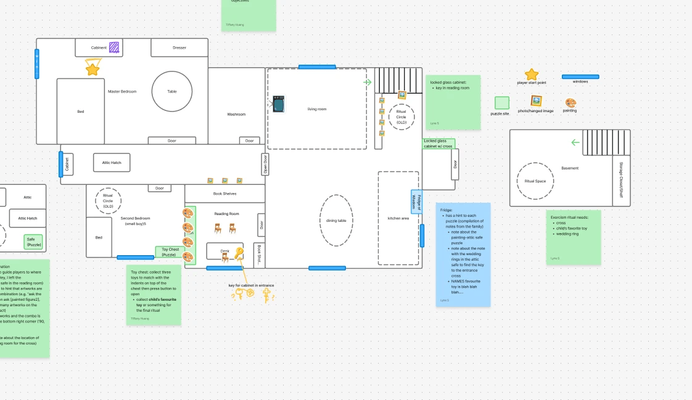
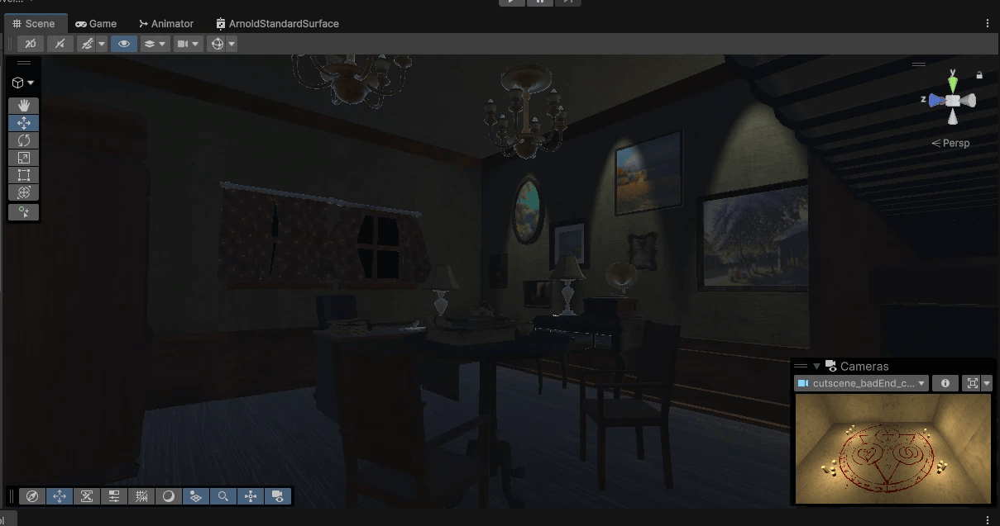

A template you can use to start building out your own style guides with.
.button-nav
<a href="#" class="button">Default Button</a>
Navigate here: in text link to Unity
<a href="#" class="button-nav">Default Button</a>
paragraph here
Time: 4 Weeks - Started in March 2026
Team: John (Coder & Sound Design), Tiffany (2D artist), Linqi (Artist & Animator)
Coding Language: C#
Game Engine: Unity
In IAT 312 Foundations of Game Design, I was involved with two other students in creating a game that had the
following features: A narrative story, foldback mechanic, and a complete gameplay. This was part of project two
where we were given permission to use any desired game engine in a 4 week period. We decided to use Unity for its
easier learning curve compared to unreal engine.
Given the 4 week deadline and a small team of 3, our team conducted a meeting through Discord to propose a game
setting of a haunted house called Prosopagnosia. We then used FIGMA to plan the layout for the house before we
later began with a simple setting and gameplay to balance the time and desire to create a visually appealing game.
I was tasked with coding the movement, camera, and interactions with the character, and lighting. As the project
was done through unity, all coding has to be done through C#. One of the difficulties we experience was our
inexperience with Unity's C# language, thus we allocated weekends to learn the language using Unity’s coding
tutorials and sources on YouTube.
I created a playable character that was capable of controlling its camera, running speed, movement, and
interaction with objects. WIth the provided animation assets from Linqi, I used scripts to enable door
interactions, item pick ups, cutscenes, and character inventory.
One of the difficult tasks was coding interaction and cutscene conditions in the game. I used a hash table which
uses key-value so the character can have an inventory system that checks if the player has a key for a locked item
using “.ContainsKey “ and it opens the respective door as part of the value.
I then handled the lighting and sfx which led to a game with a complete atmospheric and narrative haunted house
along with conditions to beat the game. Players had to find items and collect all the necessary pieces to complete
the ritual to finish the game.
Future refinements would involve more possible player interactions and further refining C# knowledge and lead to
possible AI enemy behaviors.


Time: 3 + 5 Weeks - Started in November 2025
Team: John (3D Modeler & Animator), Chloe (3D Modeler & Director), Rex (3D Modeler & Animator), Vicola (Sound Design)
Modeling: Maya
Animation: Blender
IAT343 is an animation course taught at Simon Fraser University, the course focuses on designing 3D models through
Maya, along with basic animations.
We were tasked with preparing models and animation for a 1 minute animation with a clear story in a 3 week
deadline after a 5 week planning for storyboard to apply what we learnt in a more complete and challenging
objective.
To plan the pacing of the story while gauging the appropriate large scale animation that tests our skills, we
drafted a storyboard based that focuses on human animations, with combat as the main focus.
During the process, I was given these tasks:
3D Modeling through Maya:
Shield
Cave
Stalactites
Animation done through Blender:
Character walking animation
Dragon animation.
Action Scene for the character running animation.
The biggest achievement done for this project was completing a 1 min 30 second animation with human animations in
an action environment within a 3 week deadline.
The animation has led to an A grade, but also taught the necessary foundation for future animations with humanoid
figures. The skills mentioned are necessary for game design for animation.
If another attempt for this project were to be made, experimentation with 2D effects and smear animation would be
done to create a more dramatic action scene